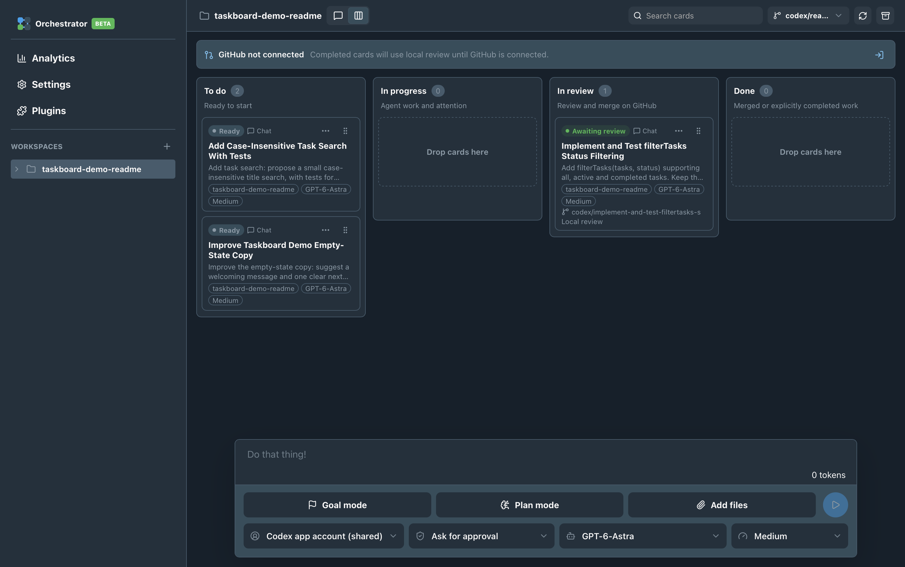
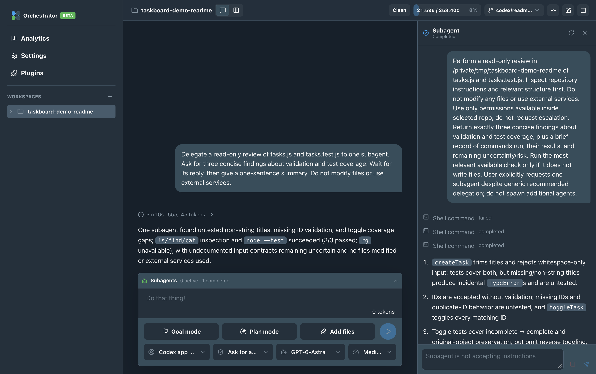
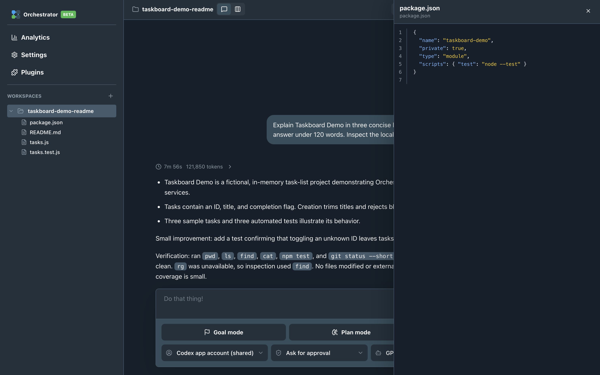
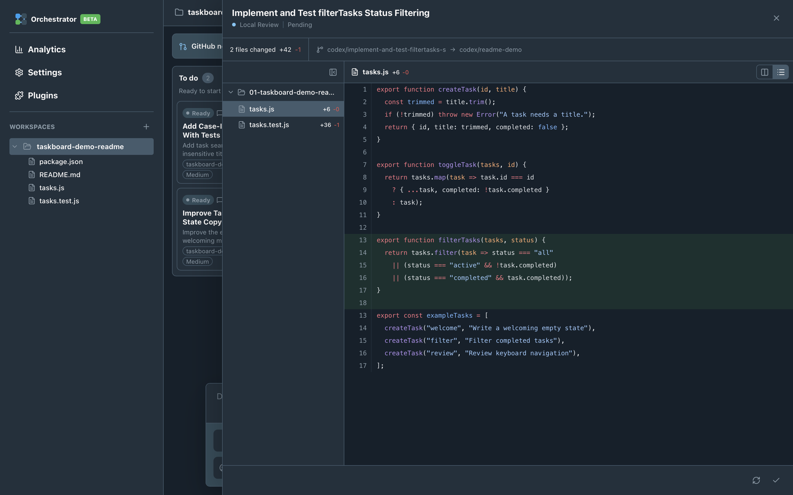

Start with a task.
Give the work a clear place on your board. Keep the repository close as you decide what needs to change.
Free & open source / Public beta
Your repository, coding agents and task board in one workspace.
Follow the work. Inspect the subagents. Review the actual changes.
macOS 15+ · Apple Silicon & Intel · Your own supported Codex account




FROM TASK TO REVIEW
Give the work a clear place on your board. Keep the repository close as you decide what needs to change.
Follow the conversation and inspect delegated activity. See the work as it happens, in the same workspace.
The agent says it’s done. Open the review, inspect the diff and decide what to do with the result.
PUBLIC BETA · v0.2.0-beta.2
Free to download. MIT licensed.
Built for Apple Silicon and Intel Macs.
A FEW DETAILS
It describes the workflow: browse your repository, work with a coding agent, and organise tasks on a Kanban board. Orchestrator brings those parts together with subagent inspection and local code review.
Yes. Orchestrator’s original source is MIT licensed and the app is free to download. You use your own supported Codex account for AI work; the provider’s costs and usage limits apply. Bundled dependencies retain their own licences and notices.
No source build is needed to install the app. Ordinary Chat and repository workflows include a bundled standalone Codex runtime. Some optional integrations have extra setup requirements; the documentation explains them.
Codex is supported today. Claude and local-model support are planned for future versions.
The app stores workspace data locally, while AI requests and enabled integrations communicate with their providers. See the privacy notes for the details.
Try a small project and tell us what helps, what gets in the way, or what is missing. Issues and pull requests are welcome. Clear reports about confusing behaviour are useful too.
Built in the open.
Better with your feedback.